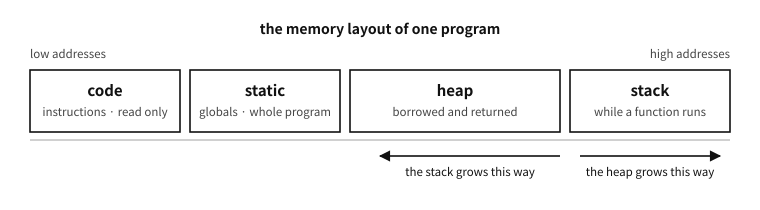

5 The regions of memory — where a program puts what
What to know first
Looking back
Chapters 3–4 drew memory as a corridor of numbered cells. The corridor runs in one line — so where along it do a program’s instructions, and the values those instructions handle, actually sit? Are they simply mixed together?
A. Both are in memory — but they are not mixed together in the same place. A program’s memory is divided into regions of different character, and each region has different rules. Some regions stay as they are until the program ends, some live only while one function runs, and some the programmer allocates and frees explicitly. Draw this rough sketch first and everything later finds its place.
The need for this chapter, and its context
This chapter comes right after addresses. chapters 3–4 drew memory as a corridor of numbered cells in a row. This chapter divides that corridor into regions by use — one corridor, but one stretch holds instructions and another holds values kept for a moment.
Memory layout comes before syntax for a further reason. Reverse the order and nearly every word soon to arrive — local variable, global, malloc, stack overflow — becomes a term to be memorised without knowing where the thing sits. Fix the names and characteristics of the regions first and those words arrive already having a place. That is why a chapter with not one line of C syntax closes Part I.
By the end of this chapter
The questions this chapter answers
- Why divide it at all? Is memory not just one lump?
- Then where does the rule “an uninitialised value is 0” come from?
- Then is the sketch this chapter taught untrustworthy?

Figure 5.1 — The memory layout of one program. Nearly every later chapter builds on this picture.
5.1 Four regions, one metaphor#
Think of a person working at a desk and the picture falls into place.
| region | metaphor | what is placed there | how long it lives |
|---|---|---|---|
| code | the work order | the program’s instructions | the whole program (usually read-only) |
| the static region | built-in shelves | values the whole program shares | the whole program |
| the stack | the workbench | temporary values needed by the work at hand | until that work ends |
| the heap | the warehouse | values whose size and lifetime you settle yourself | until freed |
Table 5.1 — The four regions of memory and what each is like
Code is only read. Rewriting the work order during execution is usually forbidden.
The static region is set up when the program starts and stays as it is until it ends. So a value there can be seen, read and changed from anywhere in the program, at any time. That is convenient. But because anything can change it, when the value goes wrong it is hard to find where it was changed.
The stack is the workbench. Begin a task and you spread out on the bench what it needs; when the task ends you clear it all away. It is fast and automatic but narrow — and once cleared away, the things that were there cannot be found again.
The heap is the warehouse. You request room of the size you need, keep it alive as long as you wish, and release it when finished; in exchange the responsibility of freeing what was allocated lies with the programmer.
Q. Why divide it at all? Is memory not just one lump?
A. Physically it is — the one corridor of lockers we saw in chapter 3. The division is an agreement, and that agreement gives two things.
First, automatic management. Gather the temporary values one function uses in one region (the stack) and they can all be cleared away when that function ends. There is no need to look after them one by one.
Second, protection. Making the code region read-only can prevent the program from changing its own instructions by mistake, or an attacker from changing them on purpose. Giving different permissions per region is the basic defence of modern operating systems.
5.2 Why the static region divides in two — the strange name bss#
In practice the static region is split in two again. The name is unfamiliar but the story is simple.
- Things with an initial value — for example something declared as “this value starts at 7”. That 7 must really be inside the executable file.
- Things whose initial value is 0 — if the initial value is 0, there is no reason to write lots of zeros into the file. Only one number saying “fill this much with zeros” is written down, and the actual filling is done when the program starts.
The second region’s name is bss, short for Block Started by Symbol. It came from a pseudo-operation in the mid-1950s assembler for the IBM 704 (UA-SAP), whose job was “attach a symbol and reserve this many words of uninitialised space after it”.1 The meaning was forgotten as the name crossed more than half a century — yet spelled out, it still describes exactly what the region does. Thanks to this distinction, the executable of a program that “starts a table of a million slots all at zero” does not grow large.
Q. Then where does the rule “an uninitialised value is 0” come from?
A. It holds for the static region only — and that 0 is not free but something somebody filled in. The operating system gives a place already filled with zeros, or on a machine with no operating system the program’s startup code runs a loop itself and fills it with zeros.
Conversely, a temporary value on the workbench (the stack) is not guaranteed to be 0. It inherits as it stands the place some other work just used and left, so what remains there cannot be known. This difference is one of the places people learning C stumble at most often, and chapter 45 treats it formally.
5.3 Static, stack and heap: the three regions contrasted#
A table we shall keep using. For now it is enough to get the feel.
| static | stack | heap | |
|---|---|---|---|
| when the size is decided | at translation | at translation (usually) | during execution |
| lifetime | the whole program | until that work ends | until freed |
| tidying up | automatic | automatic | by the programmer |
| speed | fast | fastest | relatively slow |
| room to spare | fixed | narrow (usually a few MiB) | wide |
| common accidents | changed from anywhere | overflow, referring to a dead place | leaks, double frees |
Table 5.2 — The axes that separate static, stack and heap
The last row of this table takes up a good deal of the latter part of this book. C’s reputation as powerful and dangerous comes mostly from what happens when the rules of these three regions are broken.
In practice. A sense of how narrow the workbench is
Even on today’s computers, whose warehouse (the heap) is tens of gigabytes, the workbench (the stack) is narrow. Common defaults are 8 MiB on Linux and 1 MiB on Windows — one part in several thousand of the whole memory.
So a beginner’s first collapse mostly happens here. Try to spread a big table whole on the workbench, or write a program that calls itself endlessly, and the workbench overflows and the program dies on the spot — the name is exactly that, stack overflow (the name of the world’s most famous programming question site came from here). The detailed numbers and remedies are treated in chapters 45 and 98.
A common misconception. “Using a lot of memory makes a program slow”
5.4 How far this sketch holds#
The four regions drawn so far really do look like that on the machines in wide use today. The desktops and servers running Linux, Windows and macOS, and the overwhelming majority of programs on them, have this shape. So carry the sketch with you.
But one more thing must be understood alongside it. ★ This four-region shape is not the shape the C language demands.
5.4.1 The standard has no word “stack”#
Read the C23 standard document from beginning to end and the word stack never appears, not once. Nor does heap.2 This is no surprise. The standard does not fix machinery; it fixes properties that must hold.
| What this chapter said | What the standard actually says |
|---|---|
| it is placed on the stack | automatic storage duration — created on entering a block, gone on leaving it |
| it lives in the static region | static storage duration — it lives as long as the program |
| it is allocated from the heap | allocated storage duration — what the malloc family gives |
| stack frames pile up | recursive calls are permitted |
Table 5.3 — This chapter’s words and the standard’s words
The last row matters most. Instead of demanding a stack, the standard writes this.
“ Recursive function calls shall be permitted, both directly and indirectly through any chain of other functions.3 ”
★ The difference between demanding a stack and demanding recursion is decisive. Not “provide a stack” but “make recursion work.” A stack is merely the most common way to satisfy that demand, not the only one. The standard leaves the method to the implementation and demands only the result — the idea of the abstract machine from chapters 14–15 is at work here too.
5.4.2 Machines that really are different — today#
Not “could differ in theory”: things being sold right now. The 8-bit PIC microcontroller is a good example.
In practice. A machine with a stack you cannot use
Microchip’s 8-bit PIC family has a hardware stack. Its character is quite unlike the workbench we drew.
- Its depth is fixed. Eight levels on the mid-range core, sixteen on the enhanced mid-range. Nest calls deeper than that and it overflows — it cannot be enlarged.
- ★ You cannot put values on it. All that stack holds is return addresses, and the program has no means to push onto it or read from it. It is a different thing entirely from data memory.
So where do local variables go? The compiler analyses the call graph in advance and assigns them places. Microchip’s XC8 compiler calls this the compiled stack, and its manual states that it “is statically allocated”, and that for devices which do not support the reentrant model, “all functions are encoded to use the compiled stack, which are non-reentrant functions.”4
★ Here this limitation collides head-on with the standard clause above. A non-reentrant function cannot call itself. The standard said recursion shall be permitted, and in this arrangement it does not come free. So a compiler for such an environment either builds a separate software stack when recursion is needed (slow, and it eats RAM) or tells the programmer not to recurse. The same manual notes the reason: since the number of iterations of a recursive call cannot be predicted, “the number of hardware stack levels and the total software stack size cannot be determined, so no stack guidance is possible.”
This is the reality of the freestanding environment of chapter 115 — what happens when the hardware does not provide for free what the standard demands.
Historically, such machines were the common case.
| Machine or era | What was different |
|---|---|
| early mainframes (1950s–60s) | the very idea of a call stack was not standard. A fixed slot holding the return address per function was common — and that makes recursion impossible in principle |
| early Fortran and COBOL | local variables were allocated statically, so recursion was not supported |
| Burroughs B5000 (1961) | the opposite extreme — the stack was in the hardware, and the instruction set itself was a stack machine |
| Harvard architecture | code and data live in different memories altogether. “One address space divided into four” does not hold |
| today’s 8-bit MCUs | exactly as in the box above |
Table 5.4 — Machines where this sketch does not hold
Q. Then is the sketch this chapter taught untrustworthy?
A. No. Separate two things.
① “What it looks like” is usually right. In the environments this book addresses — desktops, servers, phones, and most embedded systems that have an operating system — the four-region picture is a fact. Open a debugger and it really looks like that.
② “Must it be so” is a different question. Which is why you must not write code that leans on this sketch. Assuming the stack grows downwards, assuming local variables are neighbours in memory, comparing the addresses of two locals to judge their order — none of that is guaranteed by the standard, and machines really do differ (chapter 38). The layout extended to embedded systems is in chapter 98.
★ In short: use the sketch to understand, and write code against the contract. That distinction runs through the whole book. This chapter drew a picture for understanding; Table 5.3 marks which parts of that picture are promises.
5.5 Where this sketch will be used#
For now it is enough to know the names. These four regions keep returning through the whole book.
| where | what |
|---|---|
| chapter 12 | the ladder of memory — even the same region differs in speed by cache |
| chapter 45 | lifetime and storage duration — what C’s grammar calls these regions |
| chapter 46 | dynamic memory — the discipline of allocating from and freeing back to the warehouse |
| chapter 98 | the real layout in operating systems and embedded systems |
| chapter 99 | inside the allocator that manages the warehouse |
Table 5.5 — Where the four regions come back
We have seen what a program puts where. That is the end of Part I. It covered what the machine and its memory look like, which is worth knowing before C itself, and not one line of syntax appeared.
Part II moves on to what goes into those lockers, and how: integers, numbers with a decimal point, characters, and streams of characters. Climb that ladder of representation, from integers to streams of characters, and we then see what “being executed” actually involves (chapter 10), and how bold a lie this simple picture of the machine from Part I has been all along (chapters 12–15).
Notes
- UA-SAP (United Aircraft Symbolic Assembly Program), for the IBM 704 in the mid-1950s. The keyword carried over into FAP, the standard assembler for IBM’s 709 and 7090 machines. ↩
- ISO/IEC 9899:2024 is the number of the C standard published jointly by the International Organization for Standardization (ISO) and the International Electrotechnical Commission (IEC). A mechanical search of all 759 pages of N3220, its widely referenced working draft, found
stack0 times andheap0 times. How to obtain the standard is in appendix P. ↩ - ISO/IEC 9899:2024 §6.5.3.3 p9 (Function calls). ↩
- MPLAB XC8 C Compiler User’s Guide for PIC MCU (Microchip, DS50002737). ↩